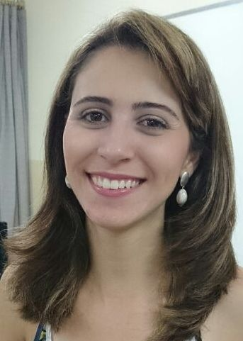
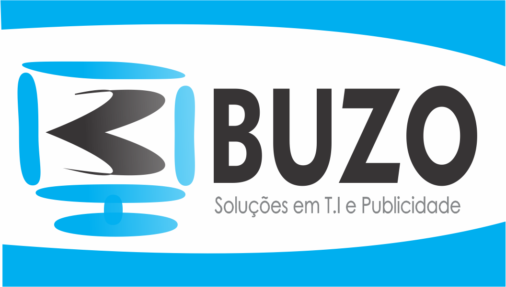
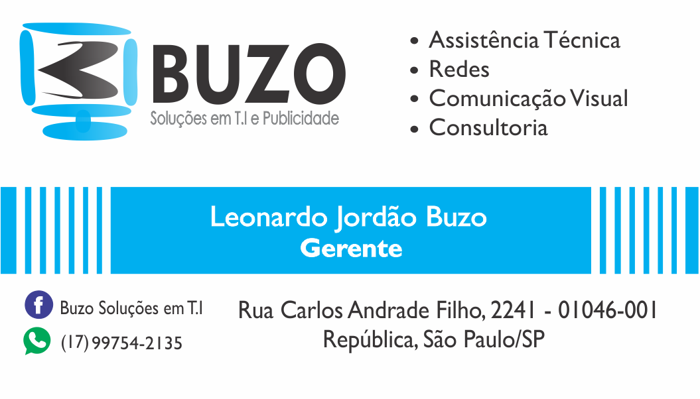
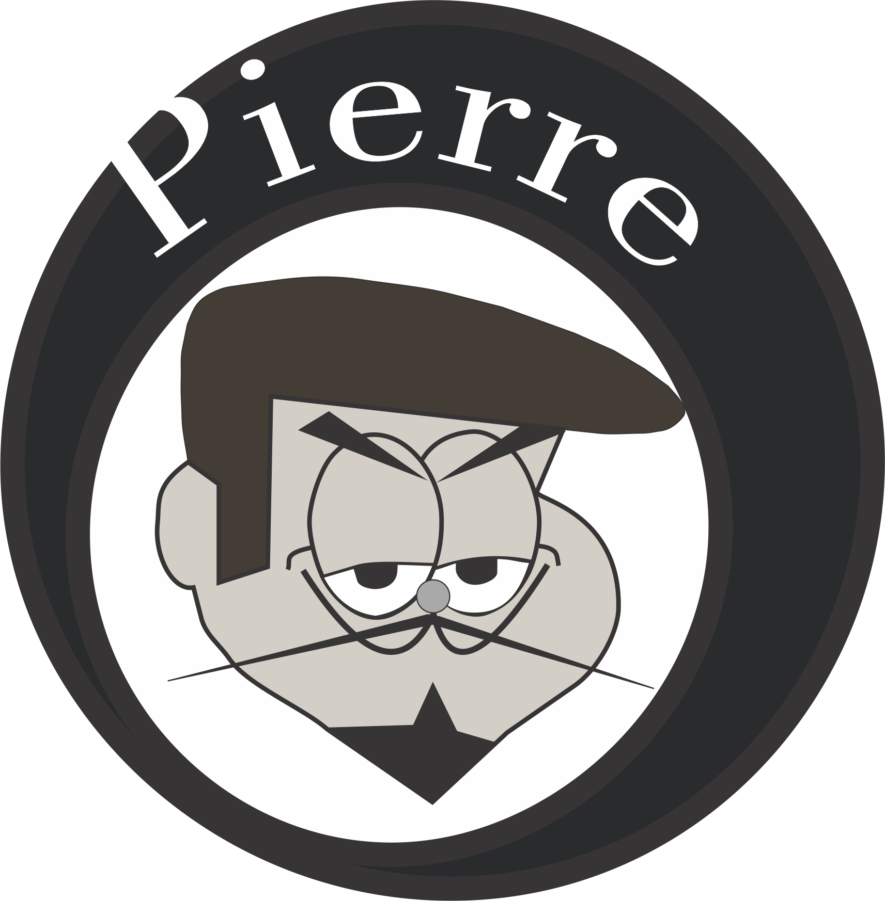

Fabiana
Mestranda em Ciência da Computação - Área de Concentração: Engenharia de Software e Banco de Dados - Universidade Estadual Paulista "Júlio de Mesquita Filho" - UNESP - São José do Rio Preto/SP. Possui Graduação em Tecnologia em Processamento de Dados pela Faculdade de Tecnologia da Alta Noroeste (Salesiano) de Araçatuba/SP. Especialização "Lato Sensu" em Computação pela UFSCar e Fundação Educacional de Fernandópolis. Licenciatura Plena em Informática pela Fatec Sorocaba. Professora do Curso Superior em Sistemas para Internet, com as disciplinas: Design Digital, Prática de Design e Engenharia de Software para Web e do Curso Superior em Gestão Empresarial da disciplina de Sistemas de Informação. Responsável pelos projetos "Click Melhor Idade" e Artes Gráficas da Fatec de Jales. Professora do Curso Técnico em Informática Integrado ao Ensino Médio da ETEC "Dr. José Luiz Viana Coutinho" de Jales (Centro Estadual de Educação Tecnológica Paula Souza) Experiência na área de Ciência da Computação, atuando nos seguimentos: informática, educação técnica e superior, EAD e consultoria.
Disciplina: Design Digital
Apresentar as bases do design gráfico de produção de sítios da internet com emprego de softwares, como corel draw e photoshop. Desenvolver logos, fazer criações, edições e tratamentos em imagens. Apresento aqui algumas imagens que foram desenvolvidas por mim durante suas aulas.
Exemplos
Trabalhos feitos em Design Digital:
 